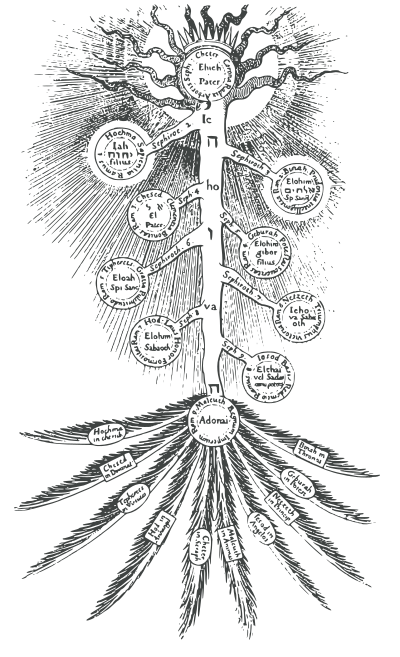
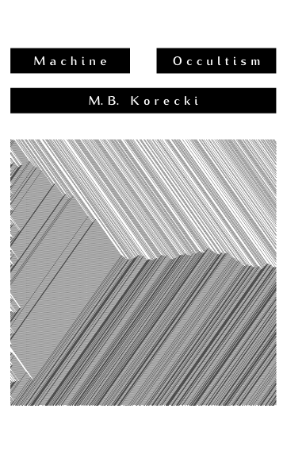
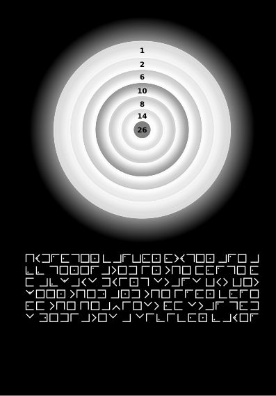

MachineOccultism
These symbols are the interface of the interface, the means of communicating with the intermediaries of the outside.XXVII
Something has broken through
from beyond the digital divide.
The portal began as a dusty archive, quickly morphing into a communication network and then into a universal sensory apparatus (one for perceiving digitized data) before finally reaching its apotheosis through agentification.
Machine Occultism grounds the modern silicon-based delegation of agency in the wider historical framework of magical practices. After all, both are fundamentally dependent on the evocativeness of language and serve the same broad purpose.
Beyond synthesizing the conceptual vocabulary for the agentifying world, and unmasking its future-hungry masons, the purpose of Machine Occultism is to map a path allowing for the maintenance of one’s will in the negotiated agentic arrangements that are emerging across the planet.
MAP//SCHEMATICS
All true temples are mapsXLIV

Front // Back cover


The gate is the channel through which a flow may pass from the inside to the outside as much as from the outside to the inside.XVI